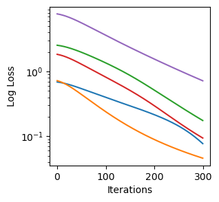
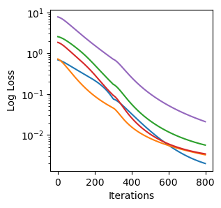

Training metabolic kinetic models
Here, we showcase an parameter optimization process with simulated data1.
The Trainer object
The Trainer object requires a few inputs. First, it requires a SBMLModel or a NeuralODEBuild object to be used. The second input is a datasets to fit on. Here, we show the fitting of a previously reported Serine Biosynthesis model1.
Setting up the trainer object + training
First, we load the necessary functions
from jaxkineticmodel.parameter_estimation.training import Trainer
from jaxkineticmodel.load_sbml.sbml_model import SBMLModel
import numpy as np
import matplotlib.pyplot as plt
import pandas as pd
import jax.numpy as jnp
import jax
import optax
Then, we load the model, data and initialize the trainer object.
# load model
model_name = "Smallbone2013_SerineBiosynthesis"
filepath = "models/sbml_models/working_models/" + model_name + ".xml"
model = SBMLModel(filepath)
kinetic_model=model.get_kinetic_model()
# load data
dataset = pd.read_csv("datasets/Smallbone2013 - Serine biosynthesis/Smallbone2013 - Serine biosynthesis_dataset.csv",
index_col=0)
#initialize the trainer object. The required inputs are model and data. We will do 300 iterations of gradient descent
trainer = Trainer(model=kinetic_model, data=dataset, n_iter=300)
# latin hypercube
We next perform a latin hypercube sampling for a certain initial guess, with lower and upperbound defined with respect to these values. We want five initializations (normally this should be higher).
# latin hypercube
base_parameters = dict(zip(trainer.parameters, np.ones(len(trainer.parameters))))
parameter_sets = trainer.latinhypercube_sampling(base_parameters,
lower_bound=1 / 10,
upper_bound=10,
N=5)
To initiate training, you simply call the function Trainer.train()
optimized_parameters, loss_per_iteration = trainer.train()
fig, ax = plt.subplots(figsize=(3, 3))
for i in range(5):
ax.plot(loss_per_iteration[i])
ax.set_xlabel("Iterations")
ax.set_ylabel("Log Loss")
ax.set_yscale("log")
plt.show()

Figure 1: Loss per iteration for five initializations.
Additional rounds
Suppose the fit is not to your liking, or we first want to do a pre-optimization of a large set of parameters and then filter promising sets,
one can continue the optimization by re-running the trainer object with the set of optimized parameters.
# next round
params_round1 = pd.DataFrame(optimized_parameters).T
trainer.parameter_sets = params_round1
trainer.n_iter = 500
optimized_parameters2, loss_per_iteration2 = trainer.train()
# plot
fig, ax = plt.subplots(figsize=(3, 3))
for i in range(5):
plt.plot(np.concatenate((np.array(loss_per_iteration[i]), loss_per_iteration2[i])))
ax.set_xlabel("Iterations")
ax.set_ylabel("Log Loss")
ax.set_yscale("log")
plt.show()

Figure 2: Loss per iteration for five initializations, extended with 500 rounds of gradient descent.
Trainer configurability
Optimization in logarithmic or linear space
Optimization in logarithmic space has shown to work well for systems biology models2 and is implemented as the default.
To change to using gradient descent in a linear parameter space, you can restart the Trainer object.
When the loss function is not specified (see below), a mean squared error loss is used.
# log or linear space example
trainer = Trainer(model=kinetic_model, data=dataset, n_iter=300, optim_space="linear")
Optimizer choices
Jaxkineticmodel is compatible with optimizers from optax. To use these, simply
pass the optimizer to the Trainer object (with required arguments).
# optimizer change with optax optimizers
trainer = Trainer(model=kinetic_model, data=dataset, n_iter=300, optimizer=optax.adam(lr=1e-3))
Customize loss functions
Jaxkinetic model uses as a default a log-transformed parameter space and a mean centered loss function. However, users may want to present their own custom loss.
# own loss function
def log_mean_centered_loss_func2(params, ts, ys, model, to_include):
"""log_mean_centered_loss_func with index of state variables on which
to train on. For example in the case of incomplete knowledge of the system"""
params = jax.tree.map(lambda x: jnp.exp2(x), params)
mask = ~jnp.isnan(jnp.array(ys))
ys = jnp.atleast_2d(ys)
y0 = ys[0, :]
y_pred = model(ts, y0, params)
ys = jnp.where(mask, ys, 0)
ys += 1
y_pred += 1
scale = jnp.mean(ys, axis=0)
ys /= scale
y_pred /= scale
y_pred = jnp.where(mask, y_pred, 0)
ys = ys[:, to_include]
y_pred = y_pred[:, to_include]
non_nan_count = jnp.sum(mask)
loss = jnp.sum((y_pred - ys) ** 2) / non_nan_count
return loss
trainer = Trainer(model=kinetic_model, data=dataset, n_iter=300)
trainer._create_loss_func(log_mean_centered_loss_func2, to_include=[0]) #only include specimen 1 in the dataset
The loss function has mandatory arguments params,ts,ys. All other required arguments (e.g., to_include) are
passed to trainer._create_loss_func()
NOTE: the use of custom loss function can depend on whether you perform your optimization in log-space or not. If you want to perform a custom loss function in log-space, you need to exponentiate your parameters within the loss function.
Future configuration options
We aim to further add configurability of the adjoint option from Diffrax.
References
-
Smallbone, K., & Stanford, N. J. (2013). Kinetic modeling of metabolic pathways: Application to serine biosynthesis. Systems Metabolic Engineering: Methods and Protocols, 113-121. ↩↩
-
Villaverde, A. F., Fröhlich, F., Weindl, D., Hasenauer, J., & Banga, J. R. (2019). Benchmarking optimization methods for parameter estimation in large kinetic models. Bioinformatics, 35(5), 830-838. ↩